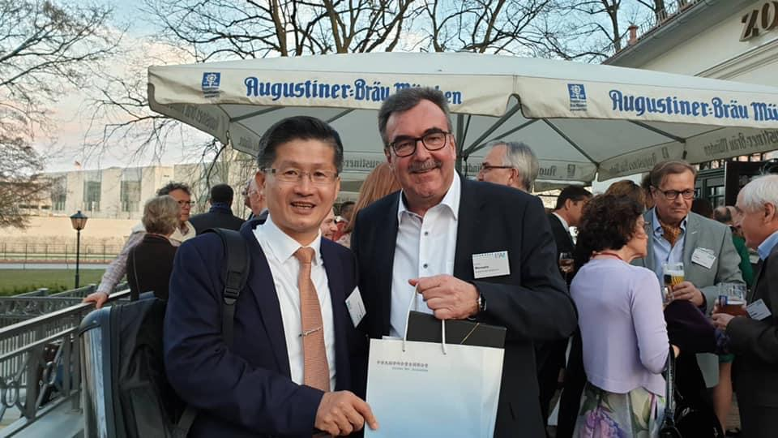
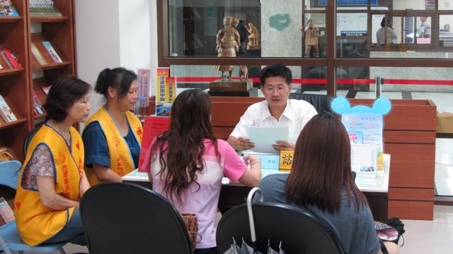

主持律師 林春發
(83)臺檢證字第2652號
專業領域
民事案件
土地（拆屋還地、確認通行權、分割共有物、耕地租佃、祭祀公業）、不動產（購屋糾紛、確認抵押債權、塗銷抵押權）、金錢消費借貸、債務清理、勞資糾紛（給付資遣費、確認僱傭關係存在）、票據債權（給付票款）、損害賠償、車禍賠償
家事案件
離婚、監護權、夫妻財產、扶養費、親子關係、繼承、遺產分割、遺囑
刑事案件
誹謗、車禍、竊盜、毒品、槍砲、詐欺、過失致死、過失傷害、侵占、背信、偽造文書、妨害性自主、公共危險、恐嚇、妨害自由
強制執行
支付命令、本票裁定、假扣押、假處分、拍賣抵押物
聯絡我們
營業時間
星期一 至 星期五
上午 08:30 - 中午 12:00
下午 02:00 - 下午 06:00
本所位置
600-49 嘉義市東區維新路72號7樓之2
(中山路、維新路交叉路口．舊地方法院斜對面)
相片特輯
林春發律師應邀代表律師公會全國聯合會參加於德國柏林舉辦之第4屆「國際律師論壇」。

林春發律師應邀代表律師公會全國聯合會參加於德國柏林舉辦之第4屆「國際律師論壇」。
林春發律師應邀代表律師公會全國聯合會參加於德國柏林舉辦之第4屆「國際律師論壇」。

林春發律師於財團法人犯罪被害人保護協會提供民眾法律諮詢協助。
林春發律師代表律師公會全國聯合會參加兩岸論壇。
林春發律師代表律師公會全國聯合會參加兩岸論壇。